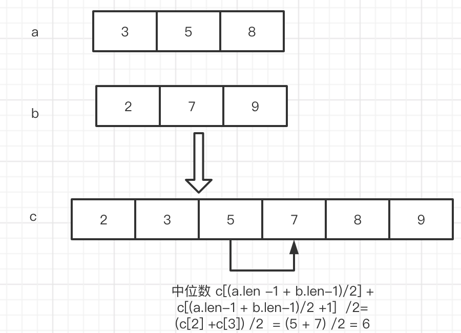
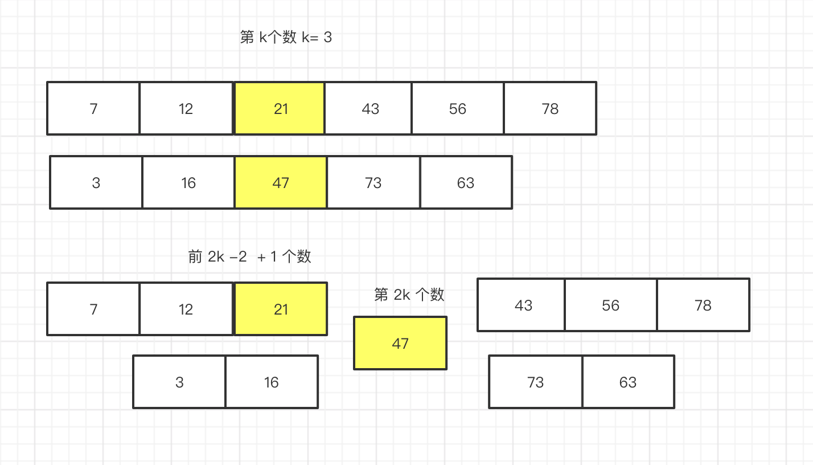

Leetcode 第4题 - 寻找两个正序数组的中位数(hard)
给定两个大小为 m 和 n 的正序（从小到大）数组 nums1 和 nums2。
请你找出这两个正序数组的中位数，并且要求算法的时间复杂度为 O(log(m + n))。
你可以假设 nums1 和 nums2 不会同时为空。
示例 1:
nums1 = [1, 3] nums2 = [2]
则中位数是 2.0
示例 2:
nums1 = [1, 2] nums2 = [3, 4]
则中位数是 (2 + 3)/2 = 2.5
解题思路
最简单的方法 就是先合并 ,然后找到 中位数取出。
这里的知识点是小学数学我们学过的 取一组数的中位数,如果是 奇数个 假设数组长度 为 m ,那么 就是 ceil(m / 2) ceil 是向上取整 比如 arr[ceil(9/2)] = arr[5] ,如果是偶数 那么 就是 取第ceil(m/2) 和 第ceil(m /2 + 1) 相加
比如 arr[ ceil(10 /2 )] +arr[(ceil(10 /2) + 1)] =arr[5] + arr[6] 。
那么 我们需要做的 就是 把2个组数 在合并后每个数对应合并后的索引给找出来,这样 通过计算出来的 中位数的索引就可以确定 中位数了。
双指针归并
时间复杂度：O (m+ n)
空间复杂度：O (1)
中位数的计算,如果数组是 奇数个 直接取 中间的数 [ 1,2 ,3] -> 2
如果数组是偶数个 取中间的 2个数相加除以 2 [1,2,3,4] -> 2 + 3 / 2 =1.5
那么 由于数组原先就是有序的,我们 可以使用归并 定义2根指针 然后依次 比大小,然后不停的往后取。

pub fn find_median_sorted_arrays(nums1: Vec<i32>, nums2: Vec<i32>) -> f64 { let mut pointer_a = 0; let mut pointer_b = 0; loop { // 这个判断取的是公共长度的 部分 a 如果 长度为 5 b如果长度为 4 那么 这个判断里面 是 前 4个数归并 if pointer_a > nums1.len() || pointer_b > nums2.len() { if nums1[pointer_a] < nums2[pointer_b] { //如果 指针a的值 < 指针b的值 指针 a 往后移动一个位置 println!("{}",nums1[pointer_a]); pointer_a +=1; }else if nums1[pointer_a] > nums2[pointer_b]{ //如果 指针a的值 > 指针b的值 指针 b 往后移动一个位置 println!("{}",nums2[pointer_b]); pointer_b +=1; }else if nums1[pointer_a] == nums2[pointer_b]{//如果两个数 相等 2根指针 都往后移动1个位置 println!("{}",nums1[pointer_b]); pointer_a +=1; pointer_b +=1; } }else if pointer_a < nums1.len(){ //当 b指针的 长度 耗尽 了 我们只需要移动 a 指针就好了 println!("{}",nums1[pointer_a]); pointer_a +=1; }else if pointer_b < nums2.len(){ // 当 a指针的 长度耗尽了 ,接下来 我们只需要移动b 指针了 println!("{}",nums2[pointer_b]); pointer_b +=1; }else{ //上述条件都不满足,跳出循环 break; } } 1 as f64 } fn main() { let mut a1 =vec![1,3,5,12,16]; let mut a2 =vec![2,4,6,7,9]; find_median_sorted_arrays(a1,a2); }
上面的 代码 我们久通过指针 指向了 2个数组,然后比较大小 然后移动指针,代码 比较简单 就是 定义 双指针 比大小 然后 移动指针。 要注意的是 由于2个数组长度不一样,当一个数组长度到头了,那么就移动剩下的数组指针到结束为止。
上面其实就实现了 将 2个有序数组进行归并的过程,实际上我们 没有定义一个数组 来存放 归并好的值,因为不需要这么做 我们直接通过 2根指针的 位置相加 计算出 每个数在 归并后数组的索引,如果 等于2个数组合并后中位数的索引 那么就找到了这个值。
但我们在编码的过程中,我们计算中位数索引的值需要注意,一点：
- 我们对给定的2个数组长度相加是奇数和 偶数 做一下判断,如果是奇数 直接取 最中间的一个数,如果是 偶数要取到 中间的 2个数相加 再 除以 2。
pub fn find_median_sorted_arrays(nums1: Vec<i32>, nums2: Vec<i32>) -> f64 { // 这个判断 是为了 处理一些 比如 [] ,[1] 这样糟糕的数据,偷懒 就直接在这处理掉吧! if (nums1.len() ==1 && nums2.len() == 0) { return nums1[0] as f64; } if(nums1.len() ==0 && nums2.len() == 1) { return nums2[0] as f64; } let mut pointer_a = 0; let mut pointer_b = 0; //flag 用于记录最后一次移动的 是 pointer_a 或者 是 pointer_b 或者都移动了 let mut flag = 0; let mut lastnum =0; loop { // 这个判断取的是公共长度的 部分 a 如果 长度为 5 b如果长度为 4 那么 这个判断里面 是 前 4个数归并 if pointer_a < nums1.len() && pointer_b < nums2.len() { if nums1[pointer_a] < nums2[pointer_b] { //如果 指针a的值 < 指针b的值 指针 a 往后移动一个位置 flag = 0; }else if nums1[pointer_a] > nums2[pointer_b]{ //如果 指针a的值 > 指针b的值 指针 b 往后移动一个位 flag = 1; }else if nums1[pointer_a] == nums2[pointer_b]{//如果两个数 相等 2根指针 都往后移动1个位置 flag = 2; } }else if pointer_a < nums1.len(){ //当 b指针的 长度 耗尽 了 我们只需要移动 a 指针就好了 flag = 0; }else if pointer_b < nums2.len(){ // 当 a指针的 长度耗尽了 ,接下来 我们只需要移动b 指针了 flag = 1; }else{ //上述条件都不满足,跳出循环 break; } //上面的所有代码 主要负责 循环移动a b 的指针,直到数组的末尾,需要 注意的 是 数组 总是有长有短 如果一边的指针 移动到末尾了 剩下的 全部移动 另一边的指针 //如果 指针 指向了 中位数 if ((nums1.len() + nums2.len() -2 ) / 2) + 1 == pointer_a + pointer_b { //如果 数组1 + 数组2 是奇数个 if (nums1.len() + nums2.len()) % 2 != 0 { //处理 指针 a 移动了的情况 if flag == 0{ return nums1[pointer_a] as f64; }else { //如果指针 b 或者 2个指针都移动 的 情况 return nums2[pointer_b] as f64; } }else{//如果 数组1 + 数组2 偶数个 //如果 是 偶数个 我们 需要 记录上一个数 和当前的 数相加 / 2 if flag == 0{ return (nums1[pointer_a] as f64 + lastnum as f64) / 2.00; }else { return (nums2[pointer_b] as f64 + lastnum as f64) / 2.00; } } //处理 pointer_a 和 【pointer_b 相等 都往后 移动 2步,那么 pointer_a + pointer_b == 数组1长度 + 数组2长度 -2 (从0索引开始 所以 -1 -1 = -2) /2 + 1 }else if (nums1.len() + nums2.len() -2 ) / 2 + 1 < pointer_a + pointer_b { break; }else{ //如果 不是中位数 if flag ==0{ lastnum = nums1[pointer_a]; //指针 a 往后移动一步 pointer_a += 1; }else if flag ==1{ lastnum = nums2[pointer_b]; //指针 b 往后移动一步 pointer_b += 1; }else{ lastnum = nums1[pointer_a]; //指针 a b 分别往后移动一步 pointer_a += 1; pointer_b += 1; } } } return lastnum as f64; } fn main() { let mut a1 =vec![1,2]; let mut a2 =vec![3,4]; println!("{}",find_median_sorted_arrays(a1,a2)); }
第一次 执行用了 8ms,后面执行 就变成 4ms了,不知道什么原因。
二分法
在 上面一种方法中,我们定义了 2根指针 从头开始 取计算 中位数对应的数,但实际上 我们可以 直接 用 二分法 每次折半 来缩减 查找的 范围。
假设 给定 2个数组 ,长度 分别为 6 和 5.

让我们 思考一个问题,什么是中位数,假定 我们 在 数组a 和数组b 中找到一个中位数,那么 不考虑 偶数个 中位数 就是 前边 和 后边的长度是一样的。
假设 数组 a 的长度为 m,数组b的长度 为 n
那么 中位数的位置 就是 (m + n + 1) / 2, 那么 意思是 我们只需要找到 一个数,它前面有 (m + n + 1) / 2 -1 个数那么 它不就
是中位数了吗。
如上图,如果我们假设 7 是中位数,那么 怎么石锤 这个证明呢?
只要证明 小于等于 7的 数是否有 (m + n + 1) / 2 -1 个不就好了吗 ?
那问题进一步的 变成 怎么 计算 <=7 的数的个数呢?
那么 首先 数组 a 中 7的索引是 1 那么 我们就说 数组a 中小于等于7的 有一个数,在数组a中找比起小的很容易.
那么 问题又变成了 怎么在 数组b 中找 <=7 的数的个数呢?
那么 逐个搜索不就好了吗,但是 有没有更好的方法呢? 既然给定的 数组b 是有序的那我们 就可以考虑 使用更高效的 搜索方法,对于有序的数组 抖索效率 最高的当然是属 二分搜索啦。
那么 我们可以肉眼看到 数组 b 中,<=7 的只有 1个 那么 加上 数组a 中的 一个 总共 就是 2个数, 12 / 2 -1 = 5 很明显,不符合 。
那么 我们使上帝视角 稍微观察下 就知道 中位数是13 是中位数,
那么 我们还是 证明下吧 13 的 index = 2, 数组 a 中 <= 13 的数 有 3 个,那么 3 + 2 = 5, 前面正好有 (m + n + 1) / 2 -1
个 数那么 它的确是中位数。
总结
根据上面的 证明 我们可以得出:
我们 可以先随机定义一根指针a,指向某个数,然后在另一个数组也定义一根指针b,
然后 我们假设 指针a 为 中位数 然后去指针 b 找 小于等于 a指针的个数,使用二分查找，每次 筛选掉一半,
然后再判定下 指针 a 是否有前 (m + n + 1) / 2 -1 个数 。
如果 a 前面的数 > (m + n + 1) / 2 -1 说明 我们 要把 a 指针 往前 移动
如果 a 前面的数 < (m + n + 1) / 2 -1 说明 我们 要把 a 指针 往后 移动
a指针 我们也每次移动 剩余范围的一半,采取这样的二分法。
这里我们 还要注意 如果 a 数组 里面找不到中位数,那么 我们就需要 直接在 b数组里面找中位数。
另外要注意的是 我们 希望是 在数组 a 里面找到 中位数,那么 要求 数组a的长度 >= 数组b 的长度,所以我们 在一开始判断下谁的长度长 就是数组a 最下数组交换。
用这种方法,要处理很多 边界条件,太烦了 写了 70% 放弃。
找第 k 个数
条件 给定数组 a 长度为 m,数组b 长度 为 n
那么 数组 a 和数组 b 的中位数 为 (m + n + 1) / 2 为什么 + 1 呢? 主要是向上取整floor。如果不加 1 那么就是向下取整。 Floor(1.x) =2 , ceil(1.x) = 1。
二分法介绍
如果给定一个 从小到大的数组,那么怎么快速查找一个数,一般使用二分法。二分法 是不断缩小搜索范围的一种方法。
第一次 搜索范围一半 (m + n + 1) / 2 一半分为 左边一半 和 右边一半

二分法 是 每次都除以 2 这样 然后 收敛在 0点, 5 -> 2 -> 1 -> 0。
我们 如果从给定的数组m 中去取第k个数,那么 它的前 面的 k -1 个数必然是小于等于 第k个数的。
那么 我们如果在 第二数组也找到第 k_ 个数,也是同样的结果,那么当我们 把第 数组 a 的 第k 个数和数组 b 的第k个数作比较,那么 必然有一方 大于或等于 另一方, 假设 数组 a 的 k为k_1 数组b 的 k为 k_2,假设 k_1 >= k_2,那么 我们可以得出 2k -1 个数 不等于 第 2k 个数.

那么 就排除前 2k -1 个数 了, 如果 k_1 要想成为 第 2k 个数,要满足 条件 k_2 的 第 k_2 + 1个数 > 第 k_1个数,
否则的话 第 k 个数。如上图 假设 47 为 第 2k个数,他前面有 2k -1个数比它小。

如上图 我们可以看到,当数组 b 中 第 k + 1 个数 比 47 小了 那么 k就会变成 第 k + 1 个了,就好像 有人问你 跑过了 倒数第二名 你是第几名一样, 由于 43 比 47小所以 就替换了 47的位置 此时 43 变成了 第 k 位数。
总结:
从上面的 推论 我们可以得出几点结论：我们 找到 第 2k 个数的位置,
比如 如果 给定 m 为 3 n 为 4 的数组， 那么 取中位数为 2k = (3 + 4 + 1) / 2 = 4
也就是 m、n 中 第 k = 2 个位置。 然后 比较下 谁大 那么 它就有可能是 第 2k 个数,因为在它前面有 比它小的 2k -1 个数,
你看 上图 想不想 一群人在追逐跑步, 如果 第 2k 个数 想要 保持 第2k名,那么 它的速度 一定 要 比它 后面的块 比前面的慢,假设 45号 前面的要等到 和 45号 同一起跑线 才开始跑的话, 我们已经知道了 45号 所在那一组 在它前面的速度 一定比它 快,那么 问题 就在 另一组了 如果另一组 里面 有比它 速度慢的话 最终 会被 45号 追过去,那么 第 2k 名就变成被追过去的那一名了,那么 问题来了 你被 第 2k 名超过了,你是第几名 ? 所以 如上图 35号 比 45号 要慢 那么 它会被 45 号第 2k 名 追过去 ,结果就是它变成了 第 2k 名。
所以 我们只要 定义 2根指针 分别指向 2个数组,刚开始 它们都指向 第 k个数,然后 比较下 谁大 谁大 谁暂时就是第 2k 个数,接下来 第 2k 个数 和 另一组 的 k + 1个数 如果 你比我小 果断 你就变成 2k个数。
哈哈 其实上面的 分析 有一点问题, 那就是 不是另一组 的 k + 1 个数 小于第 2k 个数 它就变成 第2k个数, 如果把 上图 14 变成 37,那么实际上 37 很快会取代 35 作为 2k个数。

实际上 我们数组 本生 没有变化,变化的是 指针的位置。 45 是 刚开始 2k 的位置,变化的 主要是 另一个数组的位置,它 要比 45小,同时要比 14 位置处大。 那么 奇数个 中位数 就是 35 ,偶数个 中位数 就是 2根指针的相加 除以 2,
但是 我们还要处理 一种情况 , 如果 上面一组 都比 14 小的情况 那么
pub fn find_median_sorted_arrays(nums1: Vec<i32>, nums2: Vec<i32>) -> f64{ let mut nums1 = nums1; let mut nums2 = nums2; if nums1.len() > nums2.len(){ let tmp = nums1; nums1 = nums2; nums2 = tmp; } let mid_num = (nums1.len() + nums2.len() + 1) / 2 -1; //k 为小的数 let mut pointer_a = nums1.len() -1; let mut pointer_b = 0; let k = mid_num / 2 ; if pointer_a < k{ pointer_b = mid_num - pointer_a -1; }else{ pointer_a = k; pointer_b = mid_num - k -1 ; } 1.0 }